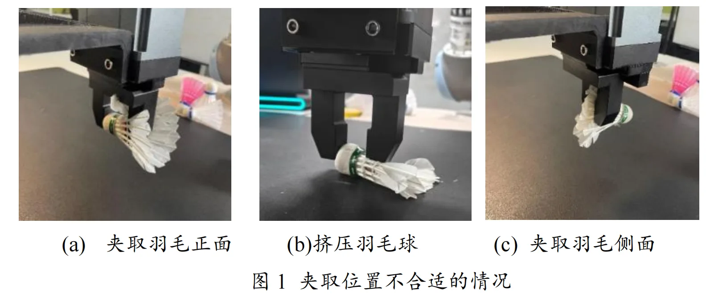

视觉抓取Visual grasping
羽毛球视觉抓取机器人Vision-guided shuttlecock grasping
检测羽毛球球头与羽身，推算抓握点和姿态，并控制机械臂从堆叠中分离目标。Detects the shuttlecock head and feathers to infer a grasp pose and separate a target from a pile.
抓取难点Grasping challenge
羽毛球不是各方向等价的物体，球头与羽身决定合适的夹持方向。多球堆叠时还需判断目标与邻近物体的关系。A shuttlecock is not rotationally symmetric for grasping: its head and feathers constrain a useful gripper orientation. Piles add contact and separation challenges.
视觉与动作设计Perception & action design
在 YOLOv5 检测基础上定位球头和羽身关键部位，据几何关系选择抓握点与姿态；抓起后加入抖动动作以辅助从堆叠中分离。Building on YOLOv5 detection, the system locates the head and feather regions, derives grasp point and orientation from their geometry, and uses a shaking action after pickup to help separate stacked items.
实验与演示Evaluation & demo
PPT 给出单球与多球抓取准确率 97.83% 和 95.1%，但未列样本量或划分。网站保留这一来源限定；实机短片展示机械臂抓取。The slides report 97.83% and 95.1% grasping accuracy for single and multiple shuttlecocks, respectively, without sample sizes or split details. These numbers are attributed to the slides; the robot video shows grasp execution.
